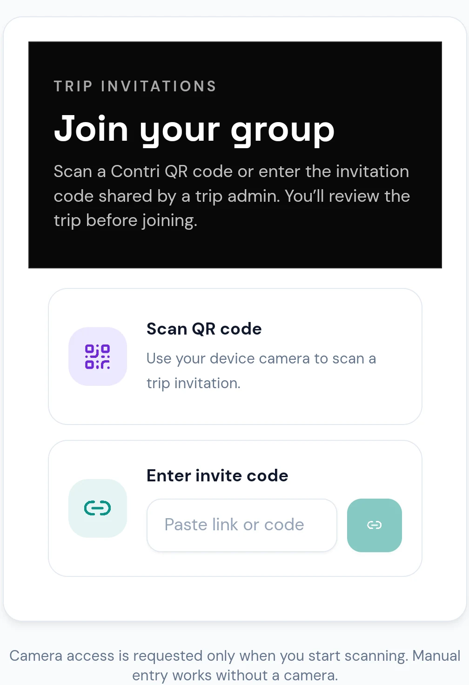

Create and manage trips
Set up a trip, manage its details, and keep its members and shared activity together.
Trip expense manager
Plan a shared trip, map its Maharashtra route, track expenses and contributions, and keep settlement updates in one place. Less back-and-forth on the math, more time for the trip.

A shared trip, in one place
Contri gives everyone in a trip a shared view of expenses, contributions, and updates.
Set up a trip, manage its details, and keep its members and shared activity together.
Share a trip invitation, scan its QR code, or enter the code. New members review the trip before joining.
Record an expense and its payer, then split it equally or use the available exact, percentage, or share-based options.
See the origin, destination, and stops on a Maharashtra state map with subtle curved connectors. Admins can drag pins, add or edit stops, reorder the journey, update dates and completion status, and follow a live progress timeline with place names. Members can view the shared route.
See the suggested payments from current trip balances. Admins and members with granted access can manage settlement records.
Trip admins can record, edit, and reverse advance contributions separately from expenses; members can see the shared contribution history.
Follow shared trip activity and manage in-app notifications. Android push alerts are available when push delivery is configured for the account and app.
Attach multiple receipt images to eligible expenses, preview them, and retry failed uploads. Receipts stay in private storage; viewing and upload access follow trip membership and permissions.
Manage your profile and appearance preferences, or start with a guest account and link Google later.
Export trip summaries as PDF and expense details as CSV when you need a copy.
Easy to get started
Keep the basics clear from the first shared cost through the last settlement.
Share its invitation link or code, let friends scan its QR, then add the journey’s locations.
Add the amount, payer, and participants who share the expense.
Use the settlement suggestions and keep a record of payments.
Privacy & account access
Contri uses Firebase Authentication and Cloud Firestore for accounts and trip data. Guest access uses Firebase Anonymous Authentication; link Google from your profile if you want an easier way to recover the same account.
This site does not verify which Firestore rules are currently deployed. Share trip invitations only with people you intend to add.
A few quick answers
More details are available in the project documentation.
Visit Contri on GitHubThe page links to the configured official GitHub Release asset and shows its published version, size, release date, and SHA-256 checksum.
Open an invitation link, scan its QR code, or enter the invitation code. Contri shows a trip preview before you confirm joining.
It provides a shared Maharashtra map canvas for trip locations, with draggable pins, ordered stops, dates, completion status, and a place-named progress timeline. It is a trip-planning view, not turn-by-turn navigation.
Yes. Guest access uses Firebase Anonymous Authentication. Guests can join trips with an invitation; linking Google can make the same account easier to recover.
Contri shows settlement suggestions from trip balances. Trip admins and members granted settlement-management access can manage settlement records.
Yes. The notification center can clear all notifications or clear notifications associated with a selected trip.
Notification sound preferences are available in Settings. Android push uses the system notification channel and its sound preference; in-app notification behavior depends on the app’s foreground state.
In-app notifications are available. Android push notifications are opt-in for supported accounts and depend on the app’s server-side push configuration.
This page links to the project’s GitHub Releases for Android APKs. It does not advertise a Google Play listing.
Official Android releases
Checking the official Android release…
Install: Download the APK, open it on your Android device, allow installs from your browser or file manager if prompted, then confirm installation. Only install releases linked from this official repository.
ANDROID RELEASE STATUS
—
Release metadata is loaded from the configured GitHub Release.
Open GitHub releaseEvery version, in one place
Loading GitHub releases…